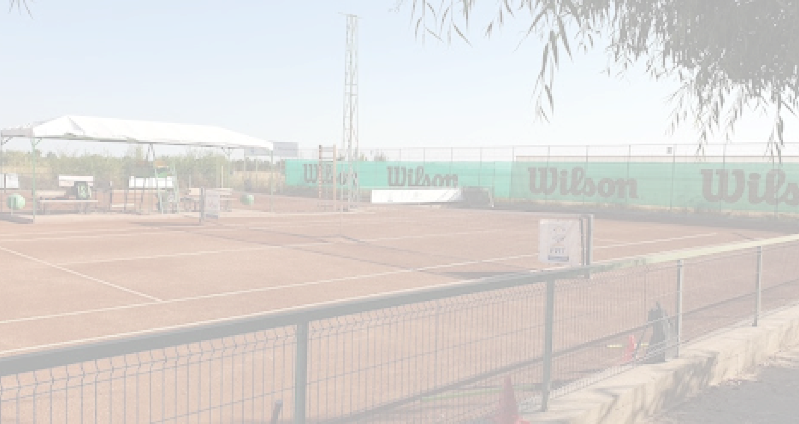
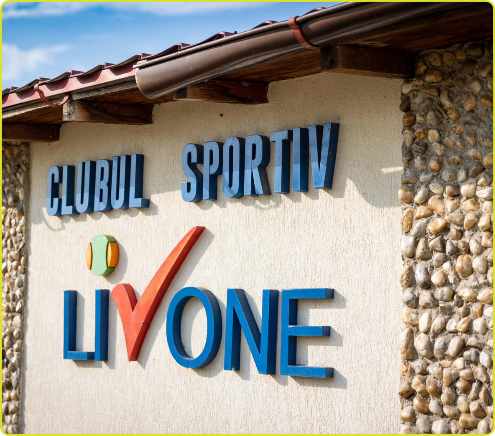

Turneu național de tenis pentru juniori — Clubul Sportiv Livone
17 Octombrie 2026
Înscrieri până la 12.10.2026 • Retragere până la 14.10.2026
2x2.400 EUR
Burse anuale + Echipament & Premii
U10, U12 (B/F)
Tablouri simplu • Băieți & Fete
1 Decembrie, Ilfov
Clubul Sportiv CS Livone Tennis
Turneul național „Memorialul Liviu Ursuleanu” s-a născut din respectul profund și recunoștința pentru moștenirea lăsată tenisului românesc de reputatul tehnician Liviu Ursuleanu. Este o sărbătoare a dăruirii, a disciplinei și a bucuriei jocului curat.
CS Livone continuă misiunea de a descoperi, calibra și propulsa tinerele talente din România către marea scenă internațională. În cadrul acestei ediții, punem la dispoziție cele mai înalte standarde de joc, arbitraj riguros și oportunități concrete de dezvoltare financiară și atletică prin sistemul de burse exclusive.
Arbitraj Oficial FRT
Supervizor desemnat și arbitri calificați.
Mingi Oficiale
Mingi noi de campionat asigurate la fiecare meci.
Asistență Medicală
Personal medical permanent la terenuri.
Zgură Premium
Suprafețe întreținute metodic între partide.

Federația Română de Tenis (FRT) este forul național care coordonează și reglementează activitatea competițională de tenis din România. Turneul Memorialul Liviu Ursuleanu este organizat în conformitate cu normele FRT, iar rezultatele sunt omologate oficial de federație.
Investim direct în viitorul juniorilor. Câștigătorii beneficiază de susținere financiară și acces complet la infrastructura de antrenament CS Livone pe parcursul unui an întreg.
Turneu U10 / U12
Susținere financiară garantată timp de 1 an calendaristic (12 luni).
Turneu U10 / U12
Susținere financiară garantată timp de 1 an calendaristic (12 luni).
Toți finaliștii și semifinaliștii vor primi pachete de premiere oferite de sponsorii oficiali.
Organizat în strictă conformitate cu normele Federației Române de Tenis (FRT) și Codul de Conduită ITF.
Competiția este deschisă tuturor tinerilor jucători legitimați la cluburile sportive afiliate FRT, care dețin viza medicală și taxa pe anul în curs achitată la zi. Participarea se realizează strict în cadrul categoriei de vârstă corespunzătoare sau conform reglementărilor de clasament superior.
Probele de concurs sunt Simplu Băieți și Simplu Fete (U10, U12). Dimensiunea tablourilor principale de simplu este de 32 sau 16 poziții, în funcție de numărul înscrierilor validate de arbitrul principal. Se vor stabili capi de serie în concordanță directă cu clasamentul oficial FRT.
Înscrierile se transmit exclusiv prin platforma oficială FRT și/sau formularul dedicat pus la dispoziție de CS Livone, până la data limită de 12.10.2026. Retragerile din competiție se pot efectua până cel târziu la data de 14.10.2026. Confirmarea prezenței la fața locului (sign-in) este obligatorie până la ora comunicată de arbitrul de turneu; absența de la tragerea la sorți fără notificare duce la anularea înscrierii.
Meciurile se dispută în sistem eliminatoriu direct, cel mai bun din 3 seturi. Pentru categoria U10 se aplică sistemul cu tie-break decisiv (super tie-break la 10 puncte) în setul al treilea. Pentru U12 seturile se joacă integral conform normelor FRT.
Turneul se joacă pe terenurile de zgură roșie de la baza CS Livone din Comuna 1 Decembrie. Mingile oficiale de campionat (omologate FRT/ITF) vor fi asigurate de organizator câte 3 pentru fiecare meci de pe tabloul principal.
Ordinea de joc zilnică va fi afișată la baza sportivă și transmisă online. Întârzierile nejustificate de peste 15 minute de la apelarea oficială a meciului pe teren atrag după sine pierderea meciului prin neprezentare (Walkover - W.O.).
Se aplică cu strictețe Codul de Conduită FRT. Orice abatere verbală, rupere de rachete sau conduită nesportivă a jucătorilor, părinților ori antrenorilor va fi sancționată direct de arbitrul principal cu avertisment, pierderea punctului sau descalificare.
Bursele sportive oferite de CS Livone în valoare de 200 EUR/lună pe o durată de 12 luni se acordă câștigătorilor finali ai categoriilor desemnate în caietul de sarcini. Acestea implică semnarea unui acord de performanță sportivă și sprijin metodologic cu clubul organizator.
Organizatorul garantează prezența personalului medical autorizat pe toată durata desfășurării partidelor. Fiecare sportiv participant este responsabil de deținerea unei asigurări medicale valabile pentru accidente sportive.
Prin înscriere, tutorii legali își exprimă acordul ca imaginea foto/video a participanților să fie utilizată exclusiv pentru promovarea turneului și a activităților CS Livone. În caz de intemperii majore, arbitrul are autoritatea de a reprograma meciurile pe terenurile acoperite sau în zilele adiacente.
Invităm antrenorii, cluburile și părinții să înregistreze tinerii sportivi înainte de încheierea termenului limită de tragere la sorți.
Baza sportivă
Comuna 1 Decembrie, Ilfov